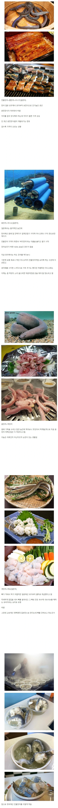

옛날에 지갑 많았어. 수출도 많이 했고 이태원에서 외국인들도 샀었고
난 민물장어보다 바다장어가 좋더라 민물장어특유의 그 흙맛이 싫어
한마리 30만원 넘는 자연산 장어드셨나보네.
그런거 먹은적 없는데.. 그냥 장어집 장어 자포니카..
장어젤리 생긴거와 달리 꽤 먹을만함
꼼장어는 되게 원시적인 물고기라던데 신기했음
ㅇㄷ
장어젤리 그냥 익힌장어 냉장고에 때려박아놓아서기름굳은거 아냐?
설명 할거면 장어 종류까지 하던가 애매 하게 했네
해외에서 치어만 가져와 국내에서 키워서 파는 우리가 흔히 비싸게 먹는 풍천장어가 자포니카장어 라든가
이외... 기타등등 ㅋㅋㅋ
갯장어(하모) 작은거는 뼈가 부들거려서 세꼬시로 먹음
큰놈은 뼈가 억시서 안되고 ㅋㅋㅋ
? 아나고는 먹음 바로 차이 느껴지지 않나?
장어 처음먹고 설사존나함
무태장어 ㅇㄷ?
영국은 도대체 뭐하는 나라일까
먹을 줄 모르면 그냥 구워먹어도 되는데 왜 저렇게 쓸데없이 뒤틀어서?
산업혁명 당시 내용이 좀들어감
영국 > 산업혁명 > 대기와 수질 오염 개심함
수질오염에서도 장어는 잘삶
노동자들한테 대량으로 공급하려다보니 굽는거보다 끓여서 두는게 효과적
끓였다가 식으니까 젤라틴 때문에 젤리 형성
생각보다 보관에도 좋네?
그렇게 퍼진게 장어젤리임
다 이유가 있구나 알려줘서 고마워용
장어는커녕 어류인지부터 애매한 꼼장어는 빼고
뱀장어(민물+바다), 붕장어(바다), 갯장어(바다)는 목은 뱀장어목으로 같고 그 아래 과만 다름
꼼장어는 지렁이과로 알고 있는데....
먹장어 피혁산업..? 저거 가죽으로 뭘 만들어 팔았다고?